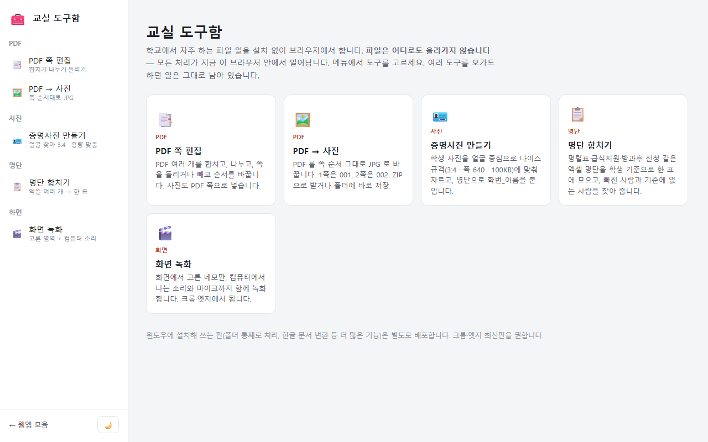
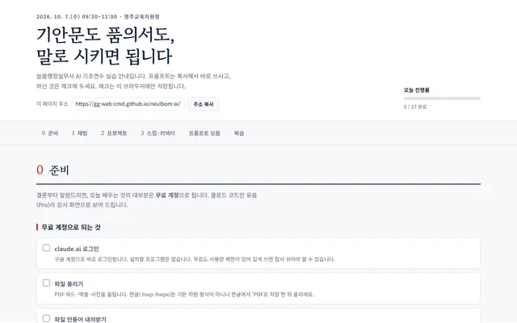
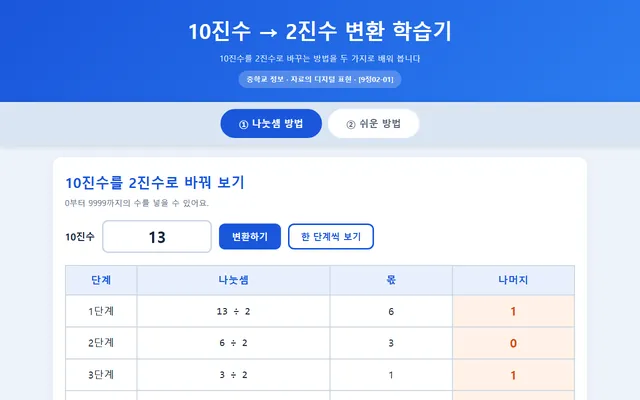
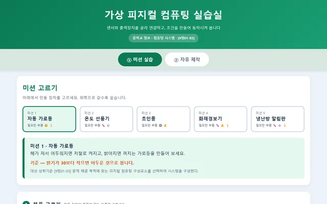
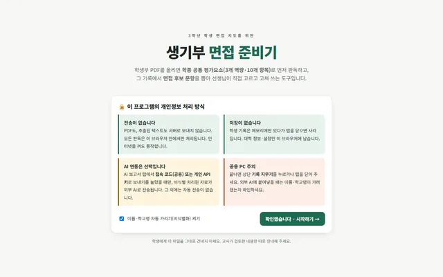

나만의 앱 만들기 (vibe coding)
교사 대상 바이브 코딩 연수 2차시 실습 안내서. Claude Code로 윈도우 앱 3개를 만들고, 설치 파일로 배포한 뒤, 골든벨 퀴즈 웹앱을 GitHub에 공개합니다. 프롬프트 복사·진행 체크·QR 자동 생성 지원.
안내서 열기 →
교실 도구함
PDF 합치기·나누기·사진 변환, 개인정보 지우개, PPT 리스타일러, 증명사진·명단 합치기·상장 만들기, QR·짧은 주소, 화면 녹화를 메뉴 하나에. 파일은 이 브라우저에서 처리합니다. 짧은 주소 생성 시 입력 주소를 외부 단축 서비스에 보냅니다.
열기 →파일이름 일괄 바꾸기
파일 이름에 번호·앞뒤 문구를 붙이고 찾아 바꾸기. 미리보기로 이름 겹침을 확인하고, 원본을 보존한 사본을 ZIP으로 받습니다.
열기 →
늘봄 행정 AI 실습
기안문·품의서·문서 파일·메신저 공지를 클로드로 만들어 보는 늘봄행정실무사 AI 기초연수 안내.
열기 →
10진수 → 2진수 변환 학습기
나눗셈 방법과 쉬운 방법, 두 가지로 2진수 변환을 단계별로 익힙니다.
열기 →
가상 피지컬 컴퓨팅 실습실
센서와 출력장치를 골라 연결하고, 조건을 만들어 동작시켜 보는 가상 실습.
열기 →워드 타자 능력 평가 시스템
한글·영문 타자 실기 평가. 교사는 시험 출제·채점 기준 설정, 학생은 연습·응시.
열기 →진로 잠재력 내비게이터
DISC · MBTI · 다중지능 · RIASEC 네 가지 검사와 진로 잠재력 종합 보고서.
열기 →
생기부 면접 준비기
학생부 기록에서 면접 문항을 설계하는 교사용 도구. AI 생성 기능을 사용하면 입력 자료가 외부 AI 서비스로 전송됩니다.
열기 →